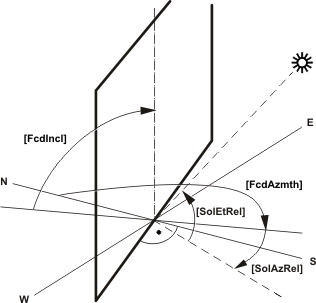
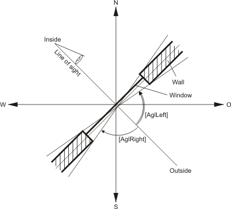
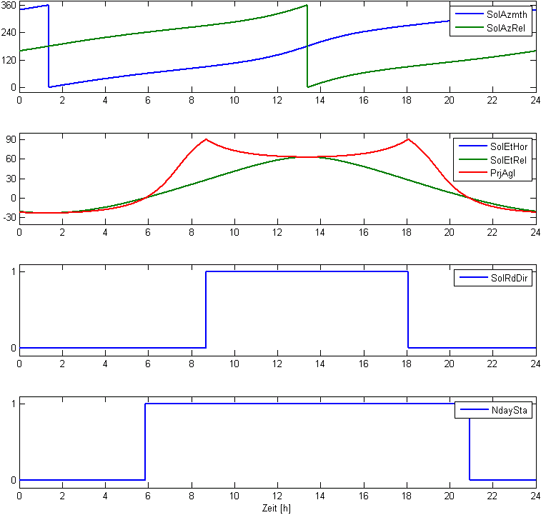
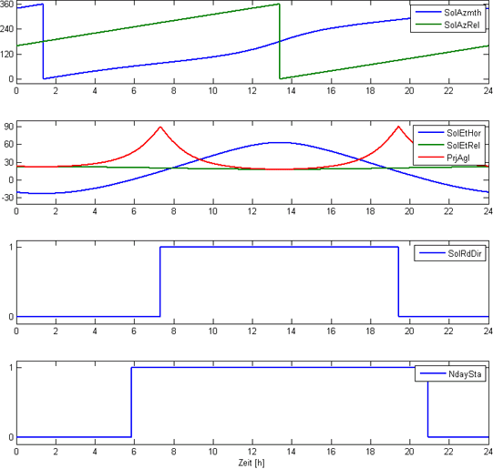

SOL_FCD：太阳能功能立面
SOL_FCD (FB555) 根据太阳位置（根据建筑物位置计算）计算太阳的相对位置（相对于立面方向）。相对太阳位置通过两个角度提供相对太阳高度角（太阳与立面地平线的角度）和相对太阳方位角（太阳相对于立面方向的方位角）。
另一个计算输出变量是项目太阳高度角。这个角度对于将百叶窗调整到太阳的位置很有用。它是恒定相对太阳方位角 0° 的等效角度。
还输出太阳辐射方向并指示阳光是否照射在立面上。可以提供角度范围（方位角范围和仰角范围），提供一种简单的方法来考虑固定遮阳设施的影响。
Application
- Used as a component for adjusting blinds.
- Used as a component for anti-glare functions.
- Used as a component for overheating protection.
功能性
Facade and solar angle for calculation.
下面说明了如何定义立面角和太阳角。

View of angle ranges
下面是定义垂直东南向立面左右角度范围的示例。
范围的选择使得没有直接辐射可以穿透房间内部。

Solar radiation direction
如果满足以下所有条件，则设置太阳辐射方向 [SolRdDir] = 1（是）：
- The absolute solar elevation angle [SolEtHor] is greater or equal to zero (i.e. only during the day).
- The projected solar elevation angle [SolEtRel] is less than the angle range above: [PrjAgl] < +[AglUp].
- The projected solar elevation angle [SolEtRel] is greater than the negative angle range below: [PrjAgl] > -[AglDown].
- The relative azimuth angle [SolAzRel] is less than the angle range right: [SolAzRel] < +[AglRight].
- The relative azimuth angle [SolAzRel] is greater than the negative angle range left: [SolAzRel] > -[AglLeft].
在这种情况下，相对方位角 [SolAzRel] 必须与范围 (-180°…180°) 一起使用！
输入
Pin | E | Description | |
SolAzmth | pa | 太阳方位角，以 SOL_POS 计算 | |
0° | 北。 | ||
90° | 东方。 | ||
180° | 南。 | ||
270° | 西方。 | ||
SolEtHor | pa | 地平线的太阳高度角，以 SOL_POS 计算。 | |
0° | 太阳在水平面上。 | ||
90° | 太阳处于最高点。 | ||
FcdAzmth | pa | 立面方向：立面的方位角。 工程注释：也对应于 SOL_CNV 中的定义。 | |
0° | 朝北的立面。 | ||
90° | 朝东的立面。 | ||
180° | 朝南的立面。 | ||
270° | 朝西的立面。 | ||
FcdIncl | pa | 立面方向：立面倾斜角度。 工程注释：也对应于 SOL_CNV 中的定义。 | |
0° | 水平立面朝上（天顶）。 | ||
90° | 垂直立面（标准）。 | ||
AglLeft | pa | 角度范围左。 从正常立面开始到左侧（从建筑物内部观察）的直接辐射可到达的相对方位角的角度范围。 | |
AglRight | pa | 角度范围右 从正常立面开始到右侧（从建筑物内部观察）的直接辐射可到达的相对方位角的角度范围。 | |
AglUp | pa | 角度范围向上 从正常立面向上开始的直接辐射可到达的投影太阳高度角的角度范围。 [TBD:] 图形 | |
AglDown | pa | 角度范围向下 从正常立面开始向下的直接辐射可到达的投影太阳高度角的角度范围。 | |
输出
Pin | E | Description |
SolAzRel | a | 相对太阳方位角。 |
SolEtRel | a | 相对太阳高度角。 |
PrjAgl | a | 预计太阳进入角。 |
SolRdDir | a | 太阳直接辐射到立面上。 要求 |
输入值
Pin | Description | Data type. | Default value | E.g. Engineering unit or Text group | Min. | Max. |
SolAzmth | 太阳方位角。 | 真实的 | 180.0 | 角度 | -360.0 | 360.0 |
SolEtHor | 太阳高度角。地平线角。 | 真实的 | 0.0 | 角度 | -90.0 | 90.0 |
FcdAzmth | 立面的方位角。 | 真实的 | 180.0 | 角度 | -360.0 | 360.0 |
FcdIncl | 立面倾斜。 | 真实的 | 90.0 | 角度 | -180.0 | 180.0 |
AglLeft | 角度范围左。 | 真实的 | 85 | 角度 | -180.0 | 180.0 |
AglRight | 角度范围右 | 真实的 | 85 | 角度 | -180.0 | 180.0 |
AglUp | 角度范围向上 | 真实的 | 85 | 角度 | -180.0 | 180.0 |
AglDown | 角度范围向下 | 真实的 | 85 | 角度 | -180.0 | 180.0 |
输出值
Pin | Description | Data type. | Default value | E.g. Engineering unit or Text group | Min. | Max. |
SolAzRel | 相对太阳方位角。 | 真实的 |
| 角度 |
|
|
SolEtRel | 相对太阳高度角。 | 真实的 |
| 角度 |
|
|
PrjAgl | 投影太阳进入角。 | 真实的 |
| 角度 |
|
|
SolRdDir | 直接太阳辐射立面。 | 布尔值 | 0（否） | 不，是 |
|
|
例子
Example 1: Vertically standing facade.
恒定输入变量：FcdAzmth = 180°，FcdIncl = 90°（朝南）。
AglLeft = 90°，AglRight = 90°，AglUp = 90°，AglDown = 90°
输入变量随时间变化：SolEtHor 和 SolAzmth 根据 2010 年 5 月 20 日（当地时间）楚格（东经 8.52°，纬度 47.17°）计算得出。
Diagrams:
[SolAzmth] = 太阳方位角。
[SolAzRel] = 相对太阳方位角。
[SolEtHor] = 地平线的太阳高度角。
[SolEtRel] = 相对太阳高度角。
[PrjAgl] = 预计太阳进入角。
[SolRdDir] = 直接太阳辐射立面。

SolAzmth、SolEtHor（输入变量）、SolAzRel、SolEtHor、SolEtRel、PrjAgl、SolRdDir（输出变量）和 NightDay（信息，不是由函数直接计算）的时间曲线，例如示例 1。
Example 2: Tilted facade
恒定输入变量：FcdAzmth = 180°，FcdIncl = 45°（朝南，倾斜 45°）。
AglLeft = 90°，AglRight = 90°，AglUp = 90°，AglDown = 90°
输入变量随时间变化：SolEtHor 和 SolAzmth 根据 2010 年 5 月 20 日（当地时间）楚格（东经 8.52°，纬度 47.17°）计算得出。
Diagrams:
[SolAzmth] = 太阳方位角。
[SolAzRel] = 相对太阳方位角。
[SolEtHor] = 地平线的太阳高度角。
[SolEtRel] = 相对太阳高度角。
[PrjAgl] = 预计太阳进入角。
[SolRdDir] = 直接太阳辐射立面。

SolAzmth、SolEtHor（输入变量）、SolAzRel、SolEtHor、SolEtRel、PrjAgl、SolRdDir（输出变量）和 NightDay（信息，不是由函数直接计算）的时间曲线，例如示例 2。
过程响应
标准（参见General rules and information).
故障排除
标准（参见General rules and information).